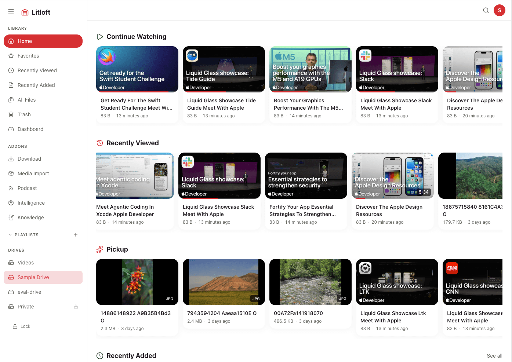
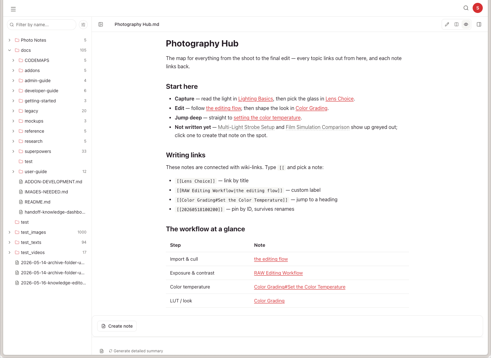
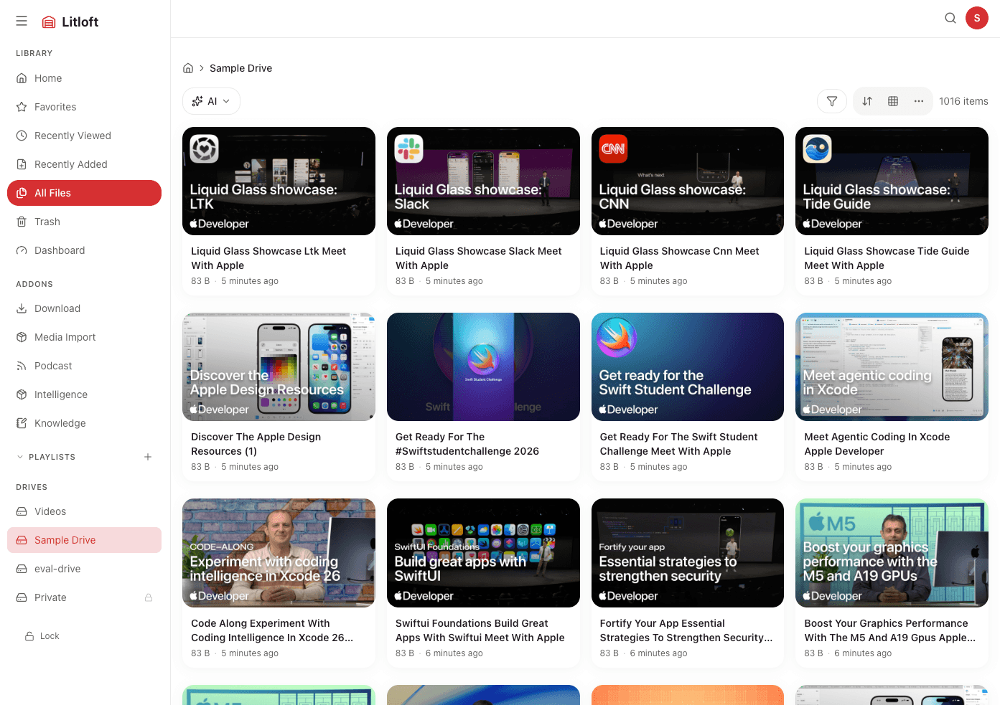

A self-hosted file and media app for your home LAN. Browse, stream, and search your files; optionally use an LLM for tag suggestions, summaries, and Q&A. Runs entirely on your own hardware.
Docker-based LAN-only Free & open source

With the optional Intelligence addon, an LLM can answer questions about your media library and return citations linked back to the original clip or document. Works with any OpenAI-compatible endpoint; a local LLM is recommended.
The optional Knowledge addon adds Markdown notes inside Litloft. Create a note from any file detail page, or jump back from a note's [[file:…]] link to the video, document, or image it references. Notes share the same library as your files, so the connection runs in both directions.

Smooth video playback for all your media — across every device on your home network. Resume at the exact moment you stopped, with playlists, favorites, and smart continue-watching built in.

Every file is processed through a multi-channel pipeline and stored in a local vector database — no external database required.
Git, Docker, and Python 3 are the only prerequisites. Everything else runs inside containers.
Use --recurse-submodules to include the bundled addons (Intelligence, Knowledge, Cloud Sync) in one go.
configure.py is a short bootstrap script. It asks only what the containers need in order to start — which host directories to mount, the port, and which addons to run. Re-run it any time you change mounts or the port.
configure.py writes docker-compose.override.yml and .env, and creates empty drives.json / passwords.json that the app fills in. It does not ask for drive names, passwords, or AI settings — those are set in the browser on first launch.
Build and start the containers. On first run this builds the images, and — if you enabled Intelligence — downloads the transcription and embedding models. Expect a few minutes.
Open http://localhost:3000. On first launch Litloft shows the /setup wizard: it lists the drives it detected from your mounts so you can name them, set passwords and access groups, and choose which AI features to enable. Everything here can be changed later at /admin/settings.
Auto-tagging, summaries, and the Ask feature require an LLM. Set it up after launch — there are two options:
Semantic search and transcription work without an LLM — only the text generation features are gated behind it.
Install only what you need. Each addon is an independent service you enable via Docker Compose.
Search, Q&A, tag suggestions, and summaries using an LLM. Works with any OpenAI-compatible API; a local LLM is recommended.
Linked notes for your media files. Build a personal wiki connected to your videos, podcasts, and documents.
Back up your drives to any cloud storage provider via rclone — S3, Backblaze, Google Drive, and more.
Add videos from YouTube, SoundCloud, or Vimeo by URL. YouTube captions integrate with the Intelligence addon for search and Q&A.
Docker-based, LAN-only, free and open source.
Self-hosted. LAN-only. Free and open source.